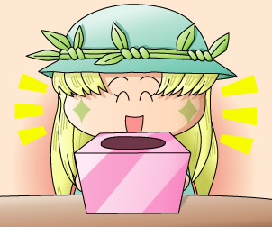
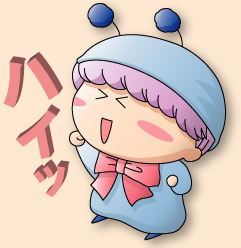

2004年4月24日（土）
「わがままフェアリー☆ミルモでポン！わんだほう」のOP曲『らびゅ らびゅ』のCD発売記念イベントに参加してきました。会場は秋葉原の石丸電気ソフトワン3Fのイベントスペースにて。ミニライブ＆トーク＆握手会といった内容です。
実は私、このテのイベントに参加するのが初めてでして、1時間前に現地に着けば大丈夫だろうと思っておりました。実際お店に到着したのが40分前(ぇ)だったわけですが、私の予想に反してすでに人の多いこと。3Fのイベントスペース前は人で溢れかえっていました。
イベントの席順は"くじ"で決まる整理番号制とのこと。『らびゅ らびゅ』のCDを買うと抽選券がもらえるようです。急いで『らびゅ らびゅ』マキシシングルを買い、抽選券をもらって、抽選箱を持っているお姉さんの方へ…。
「もう残り2枚しかありません…」
…………………ま、まじですか！？
と驚きつつも、スカスカになった箱から取り出した紙を広げてみると…。
「大当たりですね～」
遅く来たにもかかわらず、なんと２０番台を引き当ててしまいました(^^)。ちなみに今日のこのイベント、400人の入場者数を見込んでいるようです。
予定の開始時刻の15:00になりましたが、パーキッツさんのリハーサルが長引いているとのことで、なかなか中に入ることが出来ません。待っている間、ドアのすき間からリハーサル中の『らびゅ らびゅ』が漏れてきたり。まだかまだかと待っているお客さんの群れで、店内の温度が急上昇(笑)。お客さんは小学生から３０代くらいまでと幅広い年代の方がいるようです。
あ、忘れないうちにパーキッツさんについて説明しますね。……ボーカルの女性がふじのマナミさん、ギター＆キーボードが片岡さん。……コナミのゲーム「ポップンミュージック」で楽曲を提供されているとのことです。
15分ほどなくして会場へ入場です。私はなんと前から2列目の席で改めてびっくりでした。上で書いた入場者数＝400人はその通りで、全部で30列くらいあったかと…。
ここからがイベントの中身です。
パーキッツさんが入場する前に、まずはみんなで『らびゅ らびゅ』のプロモーションビデオを見ることに。ミルモな映像ではありませんでしたが、曲調にあわせてパーキッツのお二人がいろいろな動きをしていて、楽しい映像に仕上がっていました。ちなみにパーキッツさんご本人は、まだこの映像を見ていないそうです(^^;。
そしてお待ちかねのパーキッツさんの登場、最初は生の『らびゅ らびゅ』です！！さっそくみんなの手拍子で盛り上がります。さらに、歌の途中にある「～らびゅ らびゅ（ハイッ）」のハイッのところでみんな一斉にポーズを取ったり！！CDをまだ通しで聴いてなかった私も、雰囲気に飲まれ、ノリノリになっていました(^^)。ホント、イベントに持ってこいな楽しい曲ですよ～。
歌の後、パーキッツさんによる『らびゅ らびゅ』CDの紹介～～。「ミルモでポン！の主題歌になっているのです～」と、ミルモが紹介されていました。また、ふじのさんが会場のお客さんに対して「ミルモでポン！見ている人～」という質問をされました。会場内の視聴率は２５％くらいといった結果！？
後で分かったことですが、ポップンミュージックのファンの方が５０％以上のようでした。他の質問により、関西から聴きに来た方もいらっしゃったことが分かりました。
『らびゅ らびゅ』のタイトルの由来は、「Love You, Love You」とのことです。「ラブユーラブユー」だと固いイメージなのでひらがなになったとか。片岡さん作曲の「らびゅ らびゅ」のメロディを聴いた瞬間に、ふじのさんが思いついたそうです。
この後は、メインと思われるトーク会。パーキッツさんがくじを引いて、ステージ上でパーキッツさんに挟まれておしゃべりするお客さん３人（生け贄と呼ぶらしい^^;）が決まります。小心者で、かつ誰よりも短いであろうパーキッツファン歴の私は「頼むから私に当たらないでくれ～」と無言のメッセージを送っていました(笑)。幸い私は当たりませんでしたが、生け贄として選ばれた方々により、トーク会はかなり盛り上がっていました☆
トーク会の後、再び歌に戻り、カップリングの『さよならサンクチュアリ』が歌われました。この歌のメロディもなかなか良いのですが、ちょっとマイクの調子が悪かったのか、あまり声が聞こえなかったのが残念。。３曲目（ラスト）に『Ping×Pong×Dash』が歌われました。この曲はポップンミュージックに入っているのかな？かなりハイテンポで賑やかな曲で、会場はとても盛り上がっていましたよ。
イベントの後は握手会。片岡さん、ふじのさんに「ミルモでファンになりました！」と伝え、満足な気分で会場を後にするこやまるでした。
(2004/4/26)